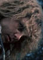
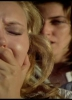
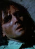
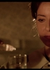

Tags:Drama
Also known as:La vera storia della monaca di Monza (original title)
Country:Italy,
Spoken languages:Italian
Genres:Drama
Director(s):Bruno Mattei
Writer(s):Claudio Fragasso
Video Codec:Unknown
Number: 3106


Certification:
Storyline:
Sister Virginia becomes the new Mother Superior at the convent of Monza. Debauched priest Don Arrigone and lecherous womanizer Giampaolo Osio plot to seduce sister Virginia by any means necessary.
Cast:    
Medium: Bluray,
Comments: Part of: Nasty Habits - The Nunsploitation Collection
Loaned: No
Aspect ratio: Unknown